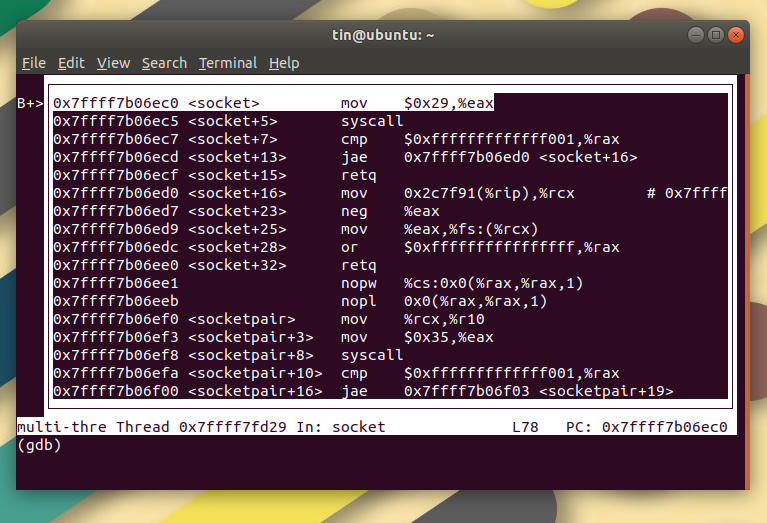
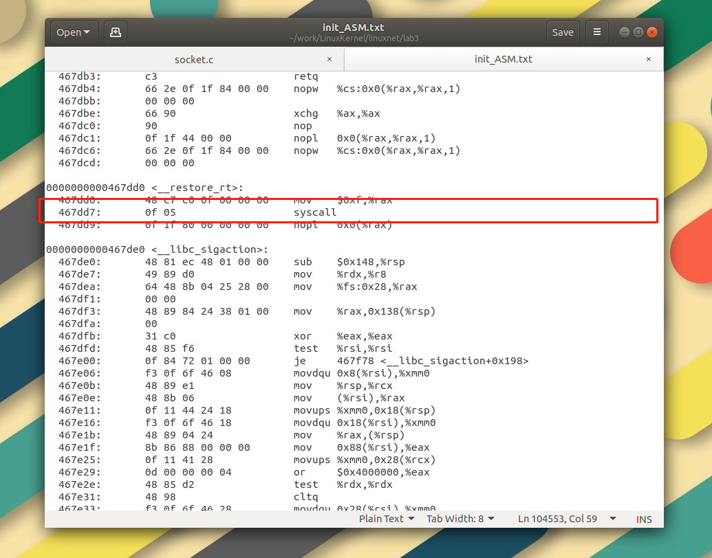

前面都是用实验楼环境做的实验，偷的懒总是要还的，这一次重装环境前后花了十几个小时，踩了无数的坑。
Ubuntu是基于LINUX内核编写的一个操作系统。LINUX内核定义了一些基本的系统功能，Ubuntu在内核之上加入了图形界面，包管理等功能，优化了人机交互。本次实验，要求使用LINUX内核5.0以上，所以，在下载安装完Ubuntu系统后，需要对内核进行更新。
$ uname -a上面这个指令会显示Ubuntu当前的内核版本，我们可以通过它来观察内核的升级是否成功。
首先到Ubuntu官网上下载一个Ubuntu镜像，但是太慢了，我们可以在国内的镜像网站上去下载。指路网易镜像。
下载完成后，在VMware虚拟机中进行系统安装，没什么可说的。
sudo passwd root/mnt/hfgs/share/。国外的资源下载速度实在太慢，所以在开始工作之前，建议先更换成国内镜像，指路科大镜像。
$ sudo cp /etc/apt/sources.list /etc/apt/sources_backup.list$ sudo gedit /etc/apt/sources.list把从网上找到的资源列表复制拷贝过来，点击资源管理器右上角的save按钮
$ sudo apt-get update先下载5.0以上linux内核。
$ xz -d linux-5.0.1.tar.xz
$ tar -xvf linux-5.0.1.tar$ sudo apt-get install build-essential
$ sudo apt-get install libelf-dev
$ sudo apt-get install libncurses-dev
$ sudo apt-get install flex
$ sudo apt-get install bison
$ sudo apt-get install libssl-dev$ cd /linux/5.0.1
$ sudo cp /boot/config-5.0.23-generic -r .config
$ sudo make oldconfig
$ sudo make localmodconfig
$ make menuconfig在弹出的图形化界面中配置
kernel hacking -> compile-time and compiler options 勾选 [*] compiler the kernel with debug info
$ sudo make
$ sudo make modules_install
# 更新
$ sudo make install$ uname -a$ sudo apt install qemu
$ qemu-sysem-x86_64 -kernel linux-5.0.1/arch/x86_64/boot/bzIamge按照实验要求，我们分为两个方向来研究Socket系统调用。实验指出，内核将系统调用作为一个特殊中断来处理，因此首先我们对这一点进行验证；其次我们将探究，对于不同的协议，Socket系统调用源码中是如何封装协议细节的，是否使用了实验提到的“多态”机制，怎么实现的。
为探究64位程序中socket的系统调用行为，我们首先需要对上一节使用到的Makefile进行修改
#
# Makefile for linuxnet/lab3
#
# ... 省略前文
rootfs:
gcc -o init linktable.c menu.c main.c -m64 -static -lpthread
find init | cpio -o -Hnewc |gzip -9 > ../../rootfs.img
qemu-system-x86_64 -kernel ../../linux-5.0.1/arch/x86/boot/bzImage -initrd ../../rootfs.img -append nokaslr -s -S
# ...省略后文在编译指令gcc那一行，将编译选项由-m32改为-m64。
执行指令
$ make rootfs我们得到了新的64位可执行文件init。
使用GDB调试init，在socket函数前打上断点。
$ gdb init
$ (gdb) break socket打开汇编窗口，查看代码运行情况
$ (gdb) layout asm可以看到，程序在socket函数入口处停下，下一条汇编指令是一个syscall的系统调用。

init对init进行反汇编
$ objdump -d init > init_ASM.txt查看init_ASM.txt文件，在第104553行找到socket对应的系统调用。

证明对于socket api的调用是通过socketcall这个特殊中断来实现的。
利用同样的办法，我们按照上一节的方法启动qemu进行远程调试，设置如下断点:
$ (gdb) break sys_socketcall跟踪到一个关键函数：SYSCALL_DEFINE2()，它位于linux-5.0.1/net/socket.c之中。
关键代码如下：
switch (call) {
case SYS_SOCKET:
err = __sys_socket(a0, a1, a[2]);
break;
case SYS_BIND:
err = __sys_bind(a0, (struct sockaddr __user *)a1, a[2]);
break;
case SYS_CONNECT:
err = __sys_connect(a0, (struct sockaddr __user *)a1, a[2]);
break;
case SYS_LISTEN:
err = __sys_listen(a0, a1);
break;
case SYS_ACCEPT:
err = __sys_accept4(a0, (struct sockaddr __user *)a1,
(int __user *)a[2], 0);
break;
// ... 省略其余部分
}可见，每次socket都会调用同一个函数，通过传入的call值不同，在分支语句中执行对应的系统服务例程。
以__sys_socket()为例，其源码位于同一文件下，也是C语言实现的：
int __sys_socket(int family, int type, int protocol)
{
int retval;
struct socket *sock;
int flags;
/* Check the SOCK_* constants for consistency. */
BUILD_BUG_ON(SOCK_CLOEXEC != O_CLOEXEC);
BUILD_BUG_ON((SOCK_MAX | SOCK_TYPE_MASK) != SOCK_TYPE_MASK);
BUILD_BUG_ON(SOCK_CLOEXEC & SOCK_TYPE_MASK);
BUILD_BUG_ON(SOCK_NONBLOCK & SOCK_TYPE_MASK);
flags = type & ~SOCK_TYPE_MASK;
if (flags & ~(SOCK_CLOEXEC | SOCK_NONBLOCK))
return -EINVAL;
type &= SOCK_TYPE_MASK;
if (SOCK_NONBLOCK != O_NONBLOCK && (flags & SOCK_NONBLOCK))
flags = (flags & ~SOCK_NONBLOCK) | O_NONBLOCK;
retval = sock_create(family, type, protocol, &sock);
if (retval < 0)
return retval;
return sock_map_fd(sock, flags & (O_CLOEXEC | O_NONBLOCK));
}注意到函数的传入参数中有一个protocol变量，它用来指定传入的协议是多少。对于系统底层来说，不同的protocol值对应不同的协议类型，而对于socket通信来说，它只负责从高层接受这个字段值，然后交付更底层的函数，在这里，调用到的sock_create代码如下：
int __sock_create(struct net *net, int family, int type, int protocol,
struct socket **res, int kern)
{
int err;
struct socket *sock;
const struct net_proto_family *pf;
/*
* Check protocol is in range
*/
if (family < 0 || family >= NPROTO)
return -EAFNOSUPPORT;
if (type < 0 || type >= SOCK_MAX)
return -EINVAL;
/* Compatibility.
This uglymoron is moved from INET layer to here to avoid
deadlock in module load.
*/
if (family == PF_INET && type == SOCK_PACKET) {
pr_info_once("%s uses obsolete (PF_INET,SOCK_PACKET)\n",
current->comm);
family = PF_PACKET;
}
err = security_socket_create(family, type, protocol, kern);
if (err)
return err;
// 省略后文可以发现这个函数仍然不是最底层的函数，它根据情况继续调用security_socket_creat()，或者返回协议错误信息。
从代码上来看，Socket封装协议细节，使用到的应该是名为socket的结构体，在__sys_bind()等函数中，协议字段作为地址长度被传入，说明对于socket来说是通过判断协议字段长度来区分ipv4和ipv6两种不同协议的。在socket结构体中，有一个名为sk_family的字段，通过它的取值不同来判断这个socket是使用ipv4还是ipv6。可以从socket.c中的代码印证这一点：
/* This routine returns the IP overhead imposed by a socket i.e.
* the length of the underlying IP header, depending on whether
* this is an IPv4 or IPv6 socket and the length from IP options turned
* on at the socket. Assumes that the caller has a lock on the socket.
*/
u32 kernel_sock_ip_overhead(struct sock *sk)
{
struct inet_sock *inet;
struct ip_options_rcu *opt;
u32 overhead = 0;
#if IS_ENABLED(CONFIG_IPV6)
struct ipv6_pinfo *np;
struct ipv6_txoptions *optv6 = NULL;
#endif /* IS_ENABLED(CONFIG_IPV6) */
if (!sk)
return overhead;
switch (sk->sk_family) {
case AF_INET:
inet = inet_sk(sk);
overhead += sizeof(struct iphdr);
opt = rcu_dereference_protected(inet->inet_opt,
sock_owned_by_user(sk));
if (opt)
overhead += opt->opt.optlen;
return overhead;
#if IS_ENABLED(CONFIG_IPV6)
case AF_INET6:
np = inet6_sk(sk);
overhead += sizeof(struct ipv6hdr);
if (np)
optv6 = rcu_dereference_protected(np->opt,
sock_owned_by_user(sk));
if (optv6)
overhead += (optv6->opt_flen + optv6->opt_nflen);
return overhead;
#endif /* IS_ENABLED(CONFIG_IPV6) */
default: /* Returns 0 overhead if the socket is not ipv4 or ipv6 */
return overhead;
}
}
EXPORT_SYMBOL(kernel_sock_ip_overhead);综上所述，socket实现了协议封装的多态，它通过结构体的形式，用协议字段的长度作为划分协议的依据，以此将ipv4和ipv6区分开来。而对于调用这些函数和api的高层来说，不管自己是什么协议都调用同样的函数。